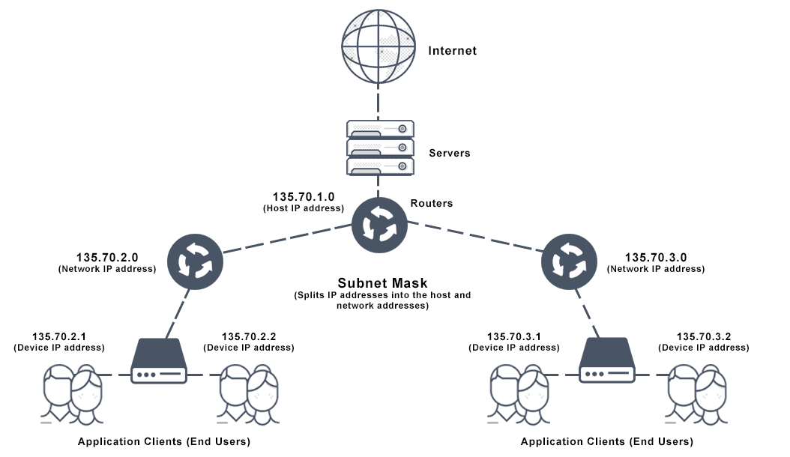
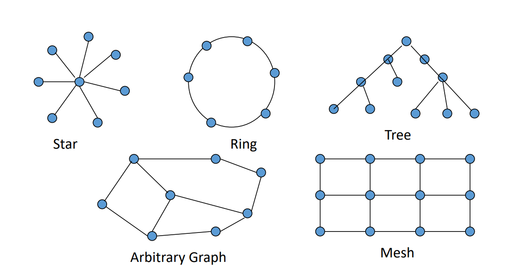
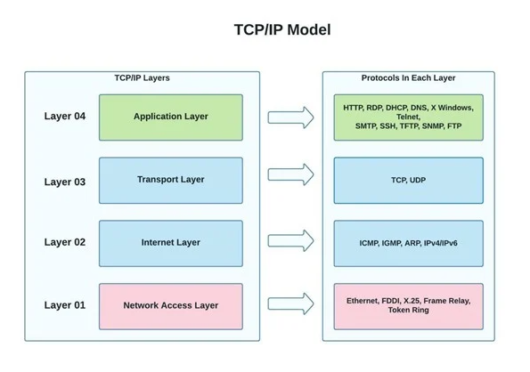
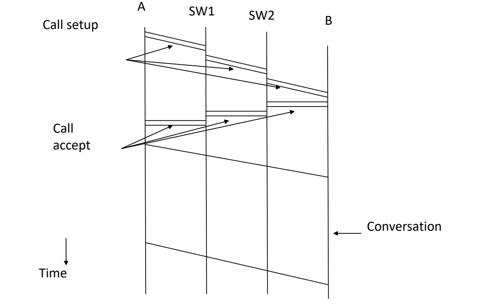
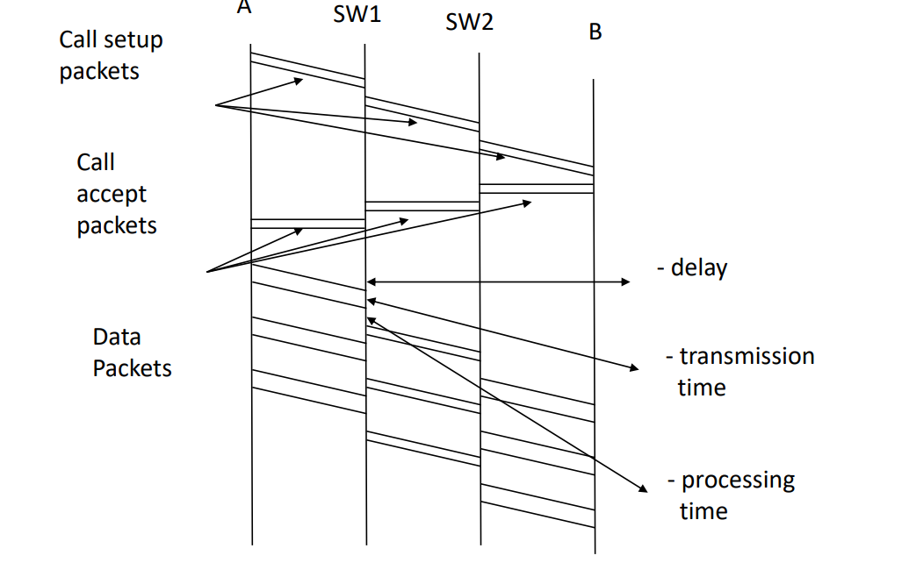
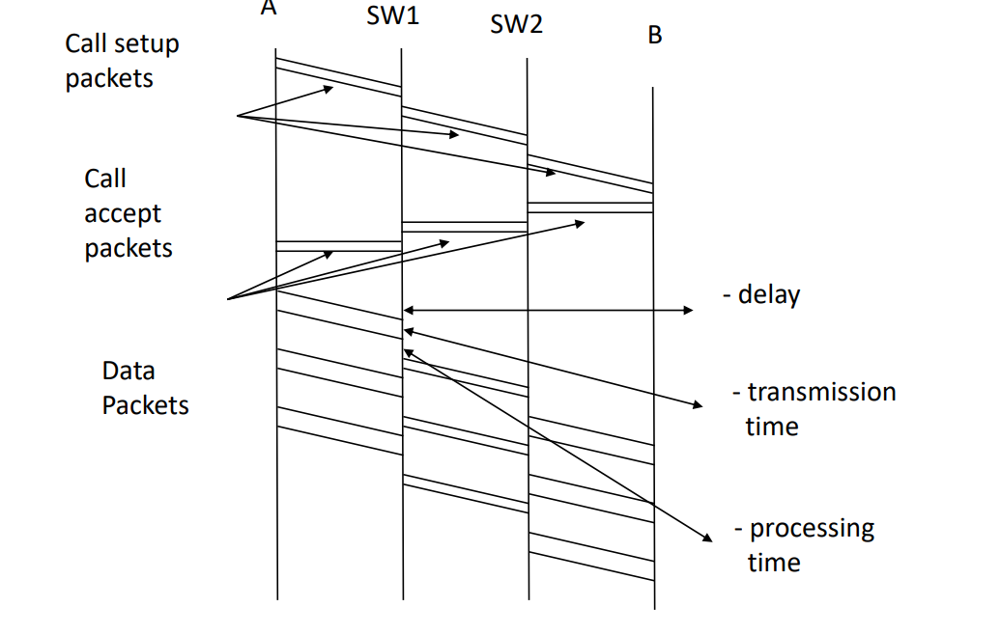
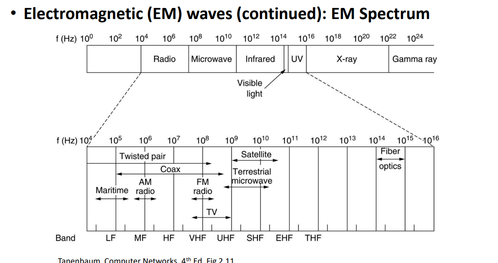
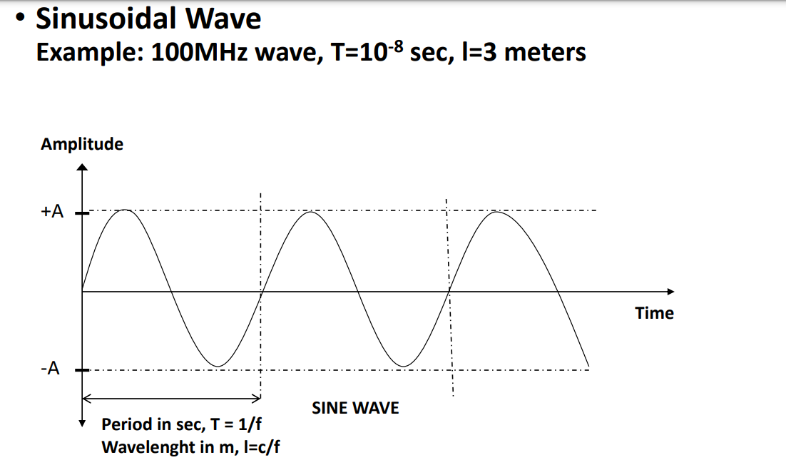
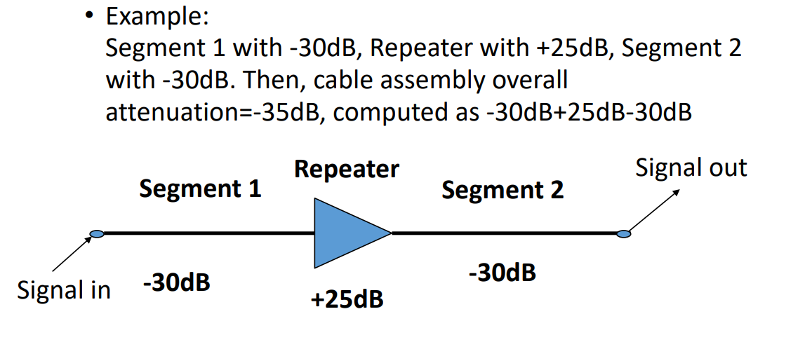

Kaan Arda Uzun
Computer Networks

Outline
- Computer Networks vs distributed systems
- Related Organizations
- WAN’s, MAN’s, LAN’s, etc
- Network Structures
- System and Network Complexity
- Layered Network Structures
- Information Flow In layered Network Structures
- Network Architecture
- ISO OSI Reference Model ( Arch.)
- TCP/IP Reference Model ( Internet Arch.)
- Other Network Architectures: ATM
- Time-Space Diagram
- Circuit Switching , Message Switching and Packet Switching
- Datagram based And Virtual Circuit Based Packet Switching
Computer Network: A Definition
- A computer network is an interconnected system of computers and devices for sharing information.
- It facilitates communication and resource sharing among connected devices, either wired or wirelessly.
- Computer networks form the backbone of modern communication, enabling data exchange and connectivity on a global scale.

Distributed System
- Such collections of computers are transparent, basically in terms of their location and address to the user.
- Built On *TOP* of computer networks.
- Users have no idea where hosts are geographically located, nor their names.
Telecom, Computer Network and Information System
- Widely varying communications systems
- Telephone exchanges,satellites,distribution systems.
- Packet Switching Networks.
- Major Characteristics: Cost,Availability, Service Quality.
WANs, MANs, LANs, ETC
- Wide Area Networks (WANs)
- cover a large distance of about 100-10k km.
- Public Telephone Networks, Packet Switching Networks
- Metropolitan Area Networks (MANs),
- City size, covers about 100km
- Nowadays, it is not used a lot.
- Local Area Networks (LANs),
- High Data Rates, 10mbps - 10 gbps
- Short Distances, 10-5000m
- Low error rates, 10⁻⁸ to 10⁻¹¹
- Personal Area Networks (PANs) and Body Area Networks (BANs)
- Personal Area, Room size, max 10m.
- Body Area, a few meters.
Computer Network Structure
Two main components
- Computers, Servers, Laptops, Tablets, etc.
- There are currently millions of hosts around the internet worldwide.
- Enables efficient, cost-effective communications among hosts.
- Consists of an interconnected set of subnet nodes.
- Interconnection structure, mostly tree graphs.
- Interface (Between a host and subnet)
- Set of functions and parameters

Communications Subnet
- Two main component types in subnets,
- Active Component as Subnet nodes,
- Hubs
- Switches
- Routers
- Gateways
- IMP (Currently, Ethernet Switch or WAP)
- Transmission Media(wireless, bandwidth) and connectors.
- There are two design approaches for the communication subnet
- Subnet Nodes sharing a communication channel directly with each other.
- Subnet Nodes which are not directly connected communicate via one or more intermediate subnet nodes
- Circuit Switching
- Message Switching (Store and Forward)
- Virtual Circuit Based Packet Switching
- Datagram Based Packet Switching

- A Signal communications channel is shared by all subnet nodes
- A message sent by an subnet node is received by all subnet nodes
- Major Problems,
- An arbitration mechanism is needed to resolve collisions.
- Static Solution; Channel Capacity is divided into discrete units.
- Dynamic Solution; Channel Capacity is allocated dynamically upon demand.
System and Network Complexity
- Set of functions and their parameters
- Very large number of functions
- Operation Systems, are complex systems
- Complex Systems, can not be realized, that is designed and constructed, by a single individual, in reasonable time and cost
- Complex Systems, realized by decomposing the system into subsystems
- The Ideal Case, N subsystems are independent, they do not have any interface to each other.
- The Worst Case, Each subsystem has an interface to any other subsystem and there are N*(N-1)/2 interfaces.
Network Structure and Protocols
- Managing network complexity, Hosts and active components of subnets in computer networks are structured as a set of layers with interfaces between each layer.
Layered Structure of
Hosts and Subnet
Active Components
Host Host
A B
| |
| | | |
| | | |
| - _ |
|--------------------------------|
Subnet Subnet
X Y
- Layer i on Host A carries a conversion, with layer i on Host B.

Network Architectures
- Network architecture, set of layers + protocols.
- Implementation details are not part of this part.
- ISO OSI, Reference Model.
- TCP/IP, Internet Architecture.
- ATM Architecture.
OSI Reference Model
- Collection of all standards and protocols that determine the rules.
- Published by ISO around 1979.
- Consist of seven layers.
- Problems are attacked in layers independent of each other.
- ISO 7498 Standard describes the fundamental model.
7.Application Layer, programs using the network.
6.Presentation Layer, standardization of data presented.
5.Session Layer, management of sessions amon appl’s.
4.Transport Layer, management of end-to-end message transmission, error control.
3.Network Layer, management of routing and congestion.
2.Data Link Layer, management of cost effective and reliable data delivery through a direct point-to-point link.
1.Physical Layer, transmission media, connectors, signals.
Physical Layer
- Transmitting bits as signals over some communication media.
- Representation of bits, bit 0: +5 volts for 10msec or 1KHz sinewave for 10msec.
- Correct and efficient transmission of bits.
- Direction and simultaneity of transmission.
Data Link Layer
- Transmit bit streams between two directly connected computers in an effective and error-free manner.
- Errors in frames,detection,retransmission, error correction.
- Speed mismatch between a receiver and transmitter.
- Direction of transmission, broadcasting.
Network Layer
- Control the operation of the subnet in terms of transmitting packets from sender to receiver.
- Datagrams and virtual circuits.
- Routing of packets.
- Congestion control.
- Internetworking.
- Addressing.
- Small and Large packets.
Transport Layer
- Management of reliable, error-free, end-to-end message transmission.
- Connection oriented and connectionless service.
- Connection establishment and disconnection.
- Congestion control.
- Addressing.
- Multiplexing.
- Services to session Layer.
Session Layer
- Management of sessions established among users.
- How to establish sessions .
- Management of dialog control.
- Management of synchronization.
- Multiplexing.
- Services to presentation layer.
Presentation Layer
- Management of functions that are commonly requested.
- Data encoding.
- Data compression.
- Data encryption/decryption.
- Authentication.
- Services to application Layer.
Application Layer
- Management of functions that are commonly requested by users.
- Application layer protocol design.
- Security services
- Infrastructure and Standard user services
TCP/IP Architecture
- Set of protocols.
- All protocols in the TCP/IP family are specified by RFCs (online doc.).
- Currently, the architecture is under the control of Internet Society.
TCP/IP Layers
- Application Layer, The same As OSI Application Layer.
- Transport Layer, The same As OSI Transport Layer.
- Internet (Network) Layer, The Same As OSI Network Layer.
- Network Access (Host-to-Host), The Same As OSI Data Link and Physical Layers.

- Layer04, File transfer,web, remote login
- Layer03, Management of end-to-end message transmission,error control.
- Layer02, Packet oriented routing
- Layer01, Mixture of data link and physical layers
ATM Network Architecture / (ATM Layers)
4. Upper Layers (Application, etc.)
3. ATM Adaptation Layer (AAL)
2. ATM Layer
1. Physical Layer

- Unlike 2D OSI and TCP/IP, ATM is defined as 3D.
Time-Space Diagram

Time-Space Diagram Question;
A message is sent from a sender to a receiver. The sender begins to transmit the message at time t₀ = 0. The receiver begins to receive the message at time t₁ = 3. The sender finishes transmitting the message at time t₂ = 5. The receiver finishes receiving the message at time t₃ = 7. The sender receives an acknowledgment from the receiver that the message has been received at time t₄ = 9.
Draw the time-space diagram for this message transmission.
- Propagation delay = t₁ - t₀ 3-0 = 0
- Transmission time = t₂ - t₁ 5-3 = 2
- Processing time = t₃ - t₂' 7-5 = 3
Circuit Switching and Message Switching
Circuit Switching
- Circuit setup pr connection
- Conversation
- Circuit disconnection
- Circuit switching has problems
- Time to set-up and disconnect
- Resources, need to be allocated at intermediate nodes
Message Switching
- “Store-and-Forward” networks
- BITNET and EARN (Academic Bitnet)
- Intermediate nodes store and forward messages
- Messages are of arbitrary size; One byte to mega ,or gigabytes
- Problems;
- Large amount of buffers needed at intermediate nodes
- High probability of errors in message transmission, therefore high number of message retransmissions.

Packet Switching
- Packet delivery is not guaranteed.
- Packets may arrive in different order at destination.
- Example;
- Packets 1,2,3,4 sent, they may arrive in the order of 1,4,3,2.
- Each packet has the full destination address.


- Packet delivery is guaranteed ( no packet loss ).
- Packets take the same route
- Packets arrive in the same order they are sent.
- Exception: In an ATM, cell order is guaranteed, but cell delivery is not.
 

Physical Layer
- Overview
- Channel Capacity: Frequency, Bandwidth, Nyquist,Shannon
- Channel Delay: Metallic and fiber optic cables, wireless transmission, satellites
- Channel Error Rate: Attenuation, dB, noise, signal-to-noise ratio, BER
- Simplex, Half-duplex, Full-duplex channels
- Signals and Transmission media
- Data encoding, modulation, modems
- Multiplexing: FDM, TDM, SDH
Physical Layer Overview
- Physical layer is the foundation on which computer networks are built.
- Also called, Data Communications.
- Is about;
- Communication channels, capacity, delay,error rate.
- Transmission media
- How bits are sent over a communications channel as signals
- Representation of bits by some signals;
- Bit 0, +5 volts, bit 1, -5 volts, each for 10msec.
- Bit 0, 1KHz sine wave, bit 1, 2KHz sine wave, each for 10msec, each for 10msec
- Correct and efficient transmission of bits
- Direction and simultaneity of transmission
- Type of physical interface: connectors, cables
Channel Capacity
- Bandwidth
- Data Rate
- Channel throughput
- Channel Speed
- Usually measured in bits per sec.
- K(kilo) = 10^3, M(mega) = 10^6 , G(giga) = 10^9
Electromagnetic (EM) waves
- Kilo Herz, KHz : 10³ Hz
- Mega Herz, MHz: 10⁶Hz
- Giga Herz, GHz : 10⁹Hz
- Tera Herz, THz: 10¹²z
- Peta Herz, PHz: 10¹⁵Hz
- Period T, of an EM wave computed as T=1/f.
- Wavelength, shown by λ (lambda), of an EM wave traveling in vacuum with frequency f, is computed as λ=c/f, where c=3*108 meters/sec, speed of light in vacuum.

- 

- The width of the frequency range between two given frequencies F1 and F2, computed as B = F2-F1

- Baseband Signal: The bandwidth of the signal occupies the whole bandwidth of the transmission media.
- Broadband Signal: Multiple signals with usually the same bandwidth occupy the whole bandwidth of the transmission media.

- Example: A number (max, about 100) of FM radio signals, each with 200KHz bandwidth, is FM (Frequency Modulation) modulated into the total 20MHz FM bandwidth between 88MHz and 108MHz
- Capacity of channel with bandwidth B?
- Ideal Case: The channel has no noise (noiseless channel)
- Realistic Case: The channel has noise (noisy channel)
- Capacity of noiseless channel
- Channel bandwidth B • Number of discrete signal levels V (Binary signal V=2)
- Capacity in bps = 2 * B * log2 V
- If V=2, Capacity= 2 * B
Channel Delay
- Channel delay in physical layer depends on:
- Speed of electromagnetic waves and transmission media (metallic cable, fiber optic cable, wireless),
- Length of transmission media (geographical distance).
- Electromagnetic waves travel
- at the speed of light, c=3*108 meters/sec (30 cm/nanosec) in wireless media.
- at about 2/3c in metallic and fiber optic cable, ie 20 cm/ns.
Delay Example; 

Propagation/Delay Time = Distance/Propagation(Delay) Speed
Step1;
- Need to change 12000 km to meters
Delay Time = 12000 * 1000 / 2.4 * 10^8
= 5000 * 1000 / 10^8
= 0.05secs
Channel Error Rate
- A signal, injected into a communications channel as energy or power, looses its energy/power as it travels in the communications channel
- Decibels as attenuation/gain measure
- Attenuation/gain scales may be very large, therefore a logarithmic scale is used to represent them.
- dB, decibels = 10*log10 (POWERout / POWERin)
- dBm: Decibels with respect to 1mW (milliwatt)
- If in/out voltages are used, rather than in/out power, then Decibels = 20*log10 (VOLTAGEout / VOLTAGEin)
- Note that, -dB’s mean attenuation, +dB’s mean gain.
- Example 1: Power is halved Pin =10mW, Pout=5mW, Attenuation= -3dB
- Example 2: Power is doubled Pin =5mW, Pout=10mW, Gain= +3dB
- Example 3: Power is 1000 times less, -30dB, more, +30dB
- Cable Segments with repeaters